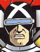
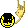

Sega CD - Snacther
:::. Corredor X - A primeira coisa que vem à mente quando se ouve falar
Lançado originalmente para o PC-8801 (um daqueles computadores japoneses cheios
de jogos legais que nunca nem vimos o cheiro) e quase que simultaneamente para
o MSX2, Snatcher foi o segundo jogo feito por Hideo, logo depois do MG
original. Algum tempo depois, ganhou um port para o PC-Engine, cujo suporte ao
CD permitiu uma qualidade superior de imagem e som, além de vozes digitalizadas
– quem acompanhou a evolução dos jogos nos últimos vinte e poucos anos
lembra-se bem de como isso impressionava, na época. Essa versão turbinada foi a
base para outros ports de consoles posteriores, como o Saturn, Playstation e
também o Sega-CD, de cuja versão trata este review.
A adaptação do jogo para o add-on da Sega é basicamente a versão PC-Engine, mas
com ligeiras censuras aqui e ali (a maioria envolvendo seios e órgãos internos
para fora de cadáveres) para se adaptar melhor ao tradicionalismo
estadunidense, além de adaptações como a idade de uma das personagens e a
aparência dos robôs que dão título ao jogo. Essa versão, a única oficialmente
lançada em inglês e exclusiva do ocidente, vendeu pouquíssimas cópias nos EUA e
relegou Snatcher ao status de cult, sendo um dos jogos mais
inflacionados do console hoje em dia – aqueles que tentam te empurrar como RARO
ÚNICO EXCLUSIVO no Mercado Livre, sabe? Essa fama tardia se deu muito em função
do sucesso de Metal Gear Solid e do próprio Kojima, mas o jogo tem fãs
fiéis desde sempre.
Passada a liçãozinha de história, vamos ao que interessa: o que diabos esse tal Snatcher tem para falarem tão bem dele? O que leva pessoas - como este que vos escreve – incluí-lo insistentemente em suas listas de melhores do console? O que separa a referência/homenagem do plágio puro e simples? Acompanhem, meus amigos.
No meio dos anos 90, um desastre nuclear na Rússia dizima praticamente metade
da população mundial. Meio século depois, na cidade de Neo Kobe, estranhos
robôs conhecidos como Snatchers aterrorizam a cidade de Neo Kobe, por se
passarem por seres humanos normais após retirar a pele de suas vítimas e se
“vestirem” com ela - daí o apelido das criaturas, já que “snatch” significa
arrancar à força ou roubar. O herói do jogo, Gillian Seed, faz parte da
organização JUNKER, disposta a acabar com essa ameaça. Encontrado junto à
esposa Jamie em sono criogênico na Sibéria algum tempo antes e sofrendo de
total amnésia, ele tenta descobrir mais sobre seu passado.
É praticamente impossível não se lembrar de outras obras de ficção simplesmente
ao ler esse relato do jogo, efeito que aumenta ao se jogar o mesmo. O plot em
si é uma cruza óbvia de O Exterminador do Futuro (a aparência dos
Snatchers no ocidente teve até que ser modificada para diminuir a semelhança), Vampiros
de Almas/Invasores de Corpos (o original e o remake são clássicos, valem
uma conferida por quem não conhece) e Blade Runner. Este último, aliás,
é o mais descarado: Gillian é uma cópia quase fiel de Rick Deckard, da
aparência ao carro e equipamentos que usa, sendo que sua função de caçar
Snatchers é justamente chamada de Runner. Nesse mesmo estilo, outras obras
(inclusive videogames da Konami) ganham citação. Nas mãos de alguém menos
criativo, essa mistura se configuraria num festival gratuito de plágios, mas
Kojima consegue transformar esse pastiche em um roteiro ágil e interessante.

Algumas cenas picantes e outras meio fortes... isso é Snacther 
A primeira foto mostra uma tela onde o jogador deve tomar uma decisão sobre o que Seed deve fazer.
Na segunda foto, o robozinho Metal Gear (auxiliar de Seed) se espanta ao encontrar o esquelo de um Snacther.
O estilo de Snatcher pode ser definido como “visual novel”. Você não comanda diretamente o personagem, apenas toma decisões via menus que dão continuidade à história conforme as situações e mistérios vão sendo elucidados. Eventualmente, acontecem cenas nas quais é necessário atirar nos oponentes, com a tela dividindo-se em grids para indicar para onde vai o tiro.
O grid com uma cena de tiro.
Além da comodidade de estar em inglês, a versão de Sega-CD tem mais alguns méritos,
desde o fato das cenas de tiro poderem se utilizar do bom e velho Justifier, o
famoso três-oitão que acompanhava o clássico Lethal Enforcers, até o
fato de que a história do jogo está completa. Explico o motivo disso ser um
diferencial: na versão original dos computadores, não existe o Terceiro Ato com
o final originalmente planejado, com o jogo terminando no Segundo Ato e
deixando algumas questões pendentes. Só no PC-Engine (e também
Meu veredicto é que, se você tem o console ou é adepto da emulação, vale muito
a pena experimentar Snatcher.
Acesse o Trombone e comente sobre essa matéria!